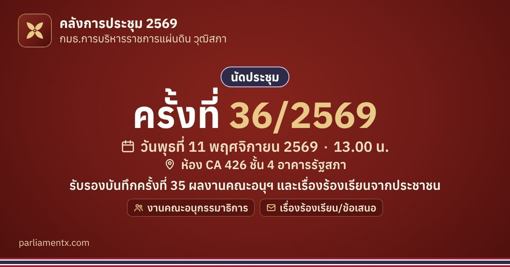

ครั้งที่ 36/2569 (11 พ.ย. 2569) · กมธ.การบริหารราชการแผ่นดิน วุฒิสภา
รับรองบันทึกครั้งที่ 35 ผลงานคณะอนุฯ และเรื่องร้องเรียนจากประชาชน
📅 วันพุธที่ 11 พฤศจิกายน 2569 · 13.00 น.📍 ห้อง CA 426 ชั้น 4 อาคารรัฐสภา
บันทึกวันประชุมไว้ในปฏิทินของท่าน
เพิ่มลง Google ปฏิทิน เพิ่มลงปฏิทินในโทรศัพท์ (iPhone, iPad และปฏิทินอื่น ๆ) เปิดแผนที่ (อาคารรัฐสภา)ใส่ปฏิทินเพื่อติดตามเท่านั้น ไม่ใช่คำเชิญเข้าร่วม กำหนดการอาจเปลี่ยนแปลง โปรดตรวจสอบกับหนังสือนัดประชุมฉบับล่าสุด หากกดใน LINE แล้วปฏิทินไม่เปิด ให้กดเมนู ⋯ แล้วเลือกเปิดในเบราว์เซอร์ (Safari หรือ Chrome)